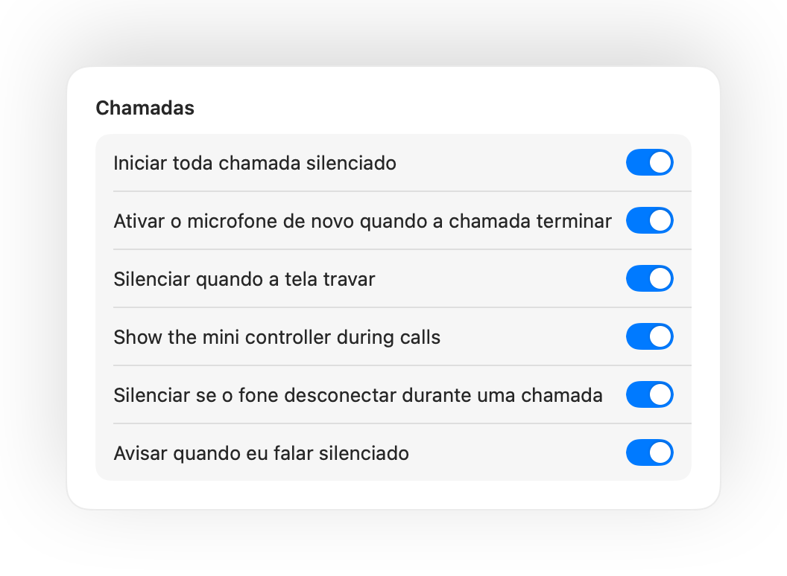
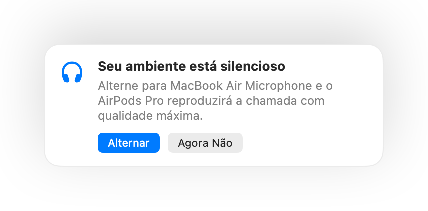

Silencie o microfone do seu Mac de qualquer lugar.
Pressione o AirPods ou use um atalho de teclado. O Muffle desliga o microfone diretamente, para que o Google Meet, Zoom, Teams, Slack e qualquer outro app só recebam silêncio.
Grátis por 3 dias. Depois, pagamento único, sem assinatura. Para macOS 14 Sonoma e posterior.

Funciona com qualquer app que use seu microfone
- Google Meet
- Zoom
- Microsoft Teams
- Slack
- Discord
- FaceTime
- Webex
- Skype
- SoWork
- Gather
- Chrome
- Safari
- Arc
- Edge
- Firefox
O Muffle silencia o microfone no nível do hardware, então não importa qual app, navegador ou aba esteja em uso na sua videoconferência.
Tudo o que o seu Mac deveria fazer em uma chamada
Pressione o AirPods para silenciar
Durante qualquer chamada, pressione a haste uma vez para silenciar e outra para ativar. Funciona até no Chrome, onde o Google Meet e outras chamadas web ignoram a pressão nos AirPods.
Um único atalho para qualquer app
Control-Option-M silencia você em qualquer lugar, mesmo quando a reunião estiver em uma aba em segundo plano. Segure para falar enquanto estiver silenciado e solte para silenciar de novo.
Um aviso quando você fala silenciado
Comece a falar enquanto estiver silenciado e o Muffle avisa você, antes de explicar toda a sua ideia sem ninguém ouvir.
Chamadas no piloto automático
Inicie toda chamada silenciado, ative o microfone de novo quando a chamada terminar e silencie sempre que bloquear a tela do seu Mac.
Saiba sempre se o microfone está ativo
Um pequeno botão flutuante mostra o status do microfone durante as chamadas. Clique para silenciar ou ativar.
O nível do seu microfone não muda
O Chrome, Zoom e Teams alteram o nível do seu microfone sozinhos. Bloqueie o nível e o Muffle mantém o ajuste no lugar certo.
Segurança quando a bateria do fone acabar
Se o seu fone desconectar no meio da conferência, o Muffle silencia antes que a chamada mude para o microfone do Mac e transmita o barulho da sala inteira.
Atalhos e Central de controle
Silencie pelo app Atalhos, pela Siri, pelo Stream Deck, Raycast ou por um botão na Central de controle.
Pressione para falar ou pressione para silenciar
Escolha como seu atalho funciona: toque para silenciar ou ativar, segure para falar ou segure para silenciar durante uma tosse. Adicione teclas separadas para silenciar e ativar, ou segure uma única tecla como ⌥ Direita ou um botão extra do mouse.
Silenciado de novo quando você fica em silêncio
Ativou o microfone para falar apenas uma frase? Se você continuar em silêncio pelo tempo que escolher, o Muffle silencia você de novo.
O melhor microfone para o ambiente
Com AirPods em um ambiente silencioso, o Muffle sugere o microfone do seu Mac para que o AirPods reproduza a chamada com qualidade máxima. Quando o local fica barulhento, ele sugere o microfone do AirPods.
Impossível não notar
Um brilho verde ou vermelho nas bordas da tela, um ícone colorido na barra de menus, um som e um botão flutuante. Ative os que você preferir.




Configure em um minuto
- Instale o Muffle pela Mac App Store e permita o acesso ao microfone.
- Entre em uma chamada em qualquer app, como de costume no seu home office.
- Pressione o AirPods, aperte Control-Option-M ou clique no ícone da barra de menus para silenciar.
Privacidade por padrão
O Muffle nunca grava, armazena nem envia áudio. Ele apenas ativa e desliga seu microfone e mede o volume da fala. Sem criação de contas, sem métricas e sem rastreamento.
Perguntas frequentes
O Muffle funciona com o Google Meet no Chrome?
Sim. O Chrome não repassa o comando de silenciar dos AirPods para chamadas web, então o Muffle recebe a pressão e silencia o microfone diretamente. O mesmo vale para qualquer chamada em abas do navegador.
As outras pessoas verão que estou silenciado?
O app da sua chamada pode continuar mostrando o microfone como ligado, porque o Muffle desliga o microfone físico e não o botão dentro do app. De qualquer forma, ninguém ouvirá você. O ícone do Muffle na barra de menus fica vermelho enquanto você estiver silenciado.
Quais modelos de AirPods são compatíveis?
AirPods Pro, AirPods 3 e posteriores, AirPods Max e modelos Beats com controles de chamada. O atalho de teclado e a barra de menus funcionam com qualquer microfone.
Funciona com Zoom, Teams, Slack e Discord?
Sim. O Muffle funciona com qualquer app no Mac que use o microfone, tanto programas instalados quanto chamadas abertas no navegador.
Existe assinatura?
Não. Experimente todos os recursos grátis por 3 dias. Depois, desbloqueie o Muffle com uma compra única.
Por que o Muffle precisa de acesso ao microfone?
O macOS só transmite a pressão do AirPods para apps que podem usar o microfone. Durante as chamadas, o Muffle mantém uma conexão silenciosa aberta. Nada é gravado, armazenado ou enviado.
O que acontece se eu fechar o Muffle enquanto estiver silenciado?
O Muffle ativa o microfone de novo quando é encerrado, para você nunca ficar bloqueado sem som.
Quais versões do macOS são compatíveis?
macOS 14 Sonoma e posterior. O botão na Central de controle exige o macOS 26 ou posterior.
O Muffle tem o recurso pressione para falar?
Sim. Escolha “Pressione para falar” nos Ajustes e segure seu atalho para falar. Você também pode segurar uma única tecla como ⌥ Direita ou fn, ou um botão extra do mouse.
Por que o som dos meus AirPods fica pior durante chamadas?
Quando uma chamada usa o microfone do AirPods, o fone entra no modo de chamada, que reproduz o áudio em qualidade menor. Em um ambiente silencioso, o Muffle sugere usar o microfone do Mac, para que o AirPods continue reproduzindo tudo com qualidade máxima.
Guias
- Como silenciar o Google Meet com AirPods no MacPressionar o AirPods não silencia o Google Meet no Chrome no Mac. Saiba como silenciar o Meet pelo fone, por atalho ou pela barra de menus em qualquer aba.
- Como silenciar o Zoom com AirPods ou atalho no MacSilencie o Zoom no Mac com um toque no AirPods ou um atalho global, mesmo em segundo plano. Funciona no app do Zoom e em reuniões pelo navegador.
- Como silenciar o Microsoft Teams com AirPods no MacSilencie o Microsoft Teams no Mac usando o fone AirPods, um atalho global ou a barra de menus. Funciona no app e no Teams pelo navegador web.
- Como silenciar conversas do Slack em qualquer app no MacSilencie conversas do Slack no Mac a partir de qualquer app com um atalho global ou AirPods. Sem precisar procurar a janela da chamada.
- Push to talk e atalho global para silenciar o Discord no MacUse um atalho global de push to talk para silenciar o Discord no Mac ou use seus AirPods. Funciona no app e no navegador.
- Como silenciar o Webex de qualquer app no MacSilencie reuniões do Webex no Mac com um atalho global ou pelos AirPods, mesmo quando o Webex não estiver em primeiro plano.
Respostas práticas para silenciar seu microfone no Mac, em qualquer app de reunião.
Chega de procurar o botão de silenciar.
Experimente o Muffle grátis por 3 dias.
Em breve na Mac App Store